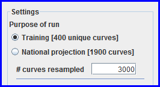

EPP's primary purpose is to fit a model to your surveillance data. Accordingly, the most important page in EPP is the Project page. Here you select your model, apply any necessary constraints to it, and carry out the actual fitting.
One of the goals in EPP 2011 was to simplify the fitting process, making it easier for countries to generate their national models. The interface for the Project page has been designed with this in mind with “One button fitting”. If you are happy with the defaults, you only need to click the big green Fit button in the upper right and EPP will fit your first sub-population. The figure below highlights a number of key sections of the page where you make changes to those defaults that affect your projection.
The figure above shows what the Project page looks like the first time you select the Curve fitting (EPP) item from the Spectrum Incidence menu. The first thing that jumps out at you is the large graph in the center of the page. The green lines in this graph are your surveillance data, taken from the HIV Data page. The data for each individual site in different years is connected by a green line, so that you can see any overall patterns in your data. The red diamonds on the graph are your survey data, taken from the Surveys page. Before fitting, your data will appear exactly as entered on the HIV Data and Surveys pages.
On the left-hand side of the page, are the controls. At the very top in the red box is the model choice panel, which also contains the fitting buttons. Below that, in the blue box under “Settings” you will select how many curves to generate. In the next green box with heading “Show:”, you choose what will be displayed on the graph. Finally, on the lower left, circled in red, is the Advanced Options button where you can make more sophisticated choices about the parameters in the models and also apply prevalence conditions before fitting. Advanced Options is described in more detail on its own help page here.
On the right-hand side is the National Epidemic Structure panel, which you are already familiar with from previous pages. It contains the list of all the sub-populations that make up your national epidemic. You can move between sub-populations by clicking on an entry in this panel. When you click on a new sub-population, the data and fit (if already done) for that sub-population are loaded into the graph.
In the lower right, are the standard EPP buttons for saving results and moving to the next sub-population or next page (Save and continue button), bringing up the EPP help system (Help button), entering comments and source information (Source button) and leaving without saving changes (Cancel button). Now let's describe each step you take to do a fit using the unique components on the Project page.
As described in the Overview, EPP allows you to use one of three different models for fitting your surveillance and survey data. The default model is Variable-r, but you can also choose EPP Classic and the Workbook model. If you have a substantial amount of data for each sub-population, e.g., many sites with long data trends, and you suspect that your incidence may have been varying over time, you should choose the Variable-r model. If you have a more limited set of data, e.g., only a few sites and a few points for each site, you probably want to use EPP Classic. You may also choose to use EPP Classic if there is no indication in your data of repeated rises and falls in prevalence and incidence over time; it will fit faster and you will get a smoother incidence curve. Normally if you are fitting actual surveillance data you will use one of these two models. If however, you are in a very sparse data situation and have estimated your annual national prevalence points from the UNAIDS Workbook, then you should use the Workbook model.
It is possible to use a mix of Variable-r and EPP Classic fits for your different sub-populations; the model selection for each sub-population is independent. When EPP goes to prepare final results for the national projection on the Fitting Results page, it will combine the curves from the different models to generate the national best fit curve. It will also generate combinations of those curves to estimate the national uncertainty, so the underlying model does not matter. This means that there is no problem if you fit one sub-population with Variable-r and another with EPP Classic. Normally, you would not combine the Workbook model with the other models since it is intended to prepare a single national projection curve based on a limited number of points taken from UNAIDS Workbooks.
Selecting your model is easy, just select the sub-population you’re modeling in the National Epidemic Structure panel and then click on the radio button next to the name of the model you wish to use. This figure illustrates choosing the Variable-r model.
As we will describe shortly, in our discussion of what happens behind the scenes after you click the “Fit” button, EPP continues to compute until it has found a certain number of curves that are close to your data. The spread of these curves estimates the uncertainty in your projection. The statisticians recommend that you should generate approximately 1900 curves to have a good estimate of uncertainty. In practice, however, we find the generating this larger number of curves can take a very long time, overnight in some countries with very large surveillance data sets. Therefore, in the initial development phases of your national model, we recommend you generate only 400 curves. This will complete much more quickly, typically 15 to 30 min for the Variable-r model, a bit faster for EPP Classic and the Workbook model, but still gives you a good idea of what the final national projection will look like. Because the curve generation is a random process, the time it takes may vary from country to country and sub-population to sub-population. In general, if you have more sites in a given sub-population it will usually take more time.
After you have completed a set of fits at the “Training” level and are comfortable with how to use the features of the Project page, you should then select “National projection [1900 curves]” under “Purpose of run” for each sub-population and run another fit. This will generate a more statistically correct set of curves for use as your final national projection. Be prepared for this to take some time (occasionally hours on large data sets with Variable-r; EPP Classic is somewhat faster, but may still take an hour or two on a large data set), so you may want to keep busy with something else while it runs.
To choose the number of curves generated, select either “Training [400 unique curves]” or “National projection [1900 curves]” under “Purpose of run”. In the figure below, EPP has been set to generate 400 unique curves. Normally, you do not need to change the number of curves resampled. Leave this value at 3000.

The third decision you must make is what data do you want to display on the graph? Above is an example of a graph after the fit has been done with all graph options except “Mean” selected.
The options available to you on the graph are:
You select which of these you wish to display by checking the box next to the desired option in the Fitting Results section of the Project page:
The final step before running a fit is to set any advanced options for the model you are using. Advanced options are accessed by clicking on the button labeled “Advanced Options” in the lower left-hand side of the Project page.
In general, the advanced options fall into two categories:
For completeness, we show the Advanced Options page for the Variable-r model below that pops up when you click on “Advanced Options”. At the top under “Limits on curve generation” are the model specific limits and initial parameter values. Below that under “Conditions on prevalence” are a set of higher and lower limits on prevalence that can be set by the user in specific years. EPP supports up to five higher conditions and five lower conditions.
Users who wish to use advanced options should consult this help page before making changes. Should you make changes to advanced options, click Save in the lower right-hand corner when done and these limits and conditions will apply during the fit for this sub-population. It should be noted that these limits and conditions apply only to the sub-population currently selected. If you wish to change them for another sub-population, you'll need to first select it in the National Epidemic Structure panel, open Advanced Options, make your changes and then save the changes before fitting that sub-population.
After completing the previous steps, you are now ready to actually fit a model to your surveillance data. This is done by clicking the large green Fit button next to the model selection. The green Fit button will turn into a red Stop button as shown below, and EPP will immediately start calculating.
If you wish to stop the calculation at any point, click the red Stop button, and EPP will abort the fit and it will change back into a green Fit button.
Typically EPP will run for anywhere from 5 to 30 minutes for a sub-population fit. During that time you will see a series of messages in the status bar at the bottom of the screen similar to those shown below. They will be counting up the number of curves generated, the number of likelihoods (LHs) calculated, and the number of unique curves found so far.
These messages will normally keep updating while EPP is computing. These status lines are your primary indication that EPP is continuing to work. When EPP is done, your final graph will appear and the line at the bottom of the screen will now read something like this for Variable-r:
And like this for EPP Classic:
In addition to the graph now displaying the best fit, bounds and selected curves, you will also notice is that the color of the sub-population name has changed in the National Epidemic Structure panel. If the sub-population has not been fit, it will be a light purple in color. After it has been fit and the fit is saved, it will become dark blue (see below). This lets you tell at a glance which of your sub-populations have been fit and which have not.
If you are happy with the fit displayed in the graph, click Save and continue and EPP will move you to the next sub-population to be fit. When you complete the last sub-population fit and click Save and continue, EPP will move you ahead to the Calibration page.
As mentioned earlier, sometimes fits can take a long time. If a fit is done using the Fit button, it will only fit the currently selected sub-population. To fit the next one, you'll have to click Save and continue and then click Fit again. This would require that you remain engaged with EPP through the entire fitting process. If your country has seven or eight sub-populations, that may keep you busy for quite a while.
The Fit All button has been added to EPP to make your life easier. If you click the Fit All button, then EPP will fit your entire set of sub-populations one after the other. When it is done, it will return to display the fit for the first sub-population. After you click Save and continue, it will show you the fit for the second sub-population. Clicking Save and continue again will show the fit for the third sub-population, and so on. Please note that you must click Save and continue for each sub-population or your results will not be saved and you will need to refit that sub-population.
The complete set of steps for using Fit All is then:
NOTE: after using Fit All, please do not move between sub-populations by clicking on them in the National Epidemic Structure panel, instead use the Save and continue button, which will store the results on the disk. Once you have saved all of them, only then can you move among them by clicking on them in the National Epidemic Structure panel without losing the fit.
This section is for advanced users who want to understand how EPP actually fits your data and estimates the model uncertainty. It provides a layman's overview of the Bayesian melding procedure used in EPP and will help you to better understand both the messages you see in the status bar while fitting and the advanced options available. For more detail refer to the 2008 and 2010 supplements on estimation and projection tools in the journal Sexually Transmitted Infections, available on the web at: http://sti.bmj.com/content/86/Suppl_2.toc and http://sti.bmj.com/content/84/Suppl_1.toc.
Each of the models used in EPP, Variable-r and EPP Classic (which is also used in Workbook fits), has a number of central variables. For Variable-r, these are:
For the EPP Classic model, the four parameters are the force of infection, r, fraction initially entering the at-risk population, f0, start year, t0, and behavior change parameter, Φ.
While mathematically challenging, the actual procedure for fitting the data is not too difficult to describe. First, you generate a large number of possible prevalence curves by randomly varying the different model parameters described above and calculating the HIV prevalence from them. This is illustrated in the figure below which shows a sample of 1000 initial curves for the Variable-r model. The gray lines are different prevalence curves from randomly chosen values of the initial pulse of infection, initial value of r, initial growth rate and values of r in later years. For EPP Classic the procedure is the same except that you vary r, f0, t0 and Φ.
As you can see, those curves in the red box rise far too rapidly, missing the data entirely. Perhaps their initial pulse of infection or initial r0 was too high. Similarly, there are a large number of curves which never grow, shown in the blue box. These probably had very small initial pulses or very small initial r0. In the actual EPP code, 10,000 curves are generated for Variable-r and 12,000 for EPP Classic. While the curve generation is going on, the EPP status bar counts up as curves are generated.
Next we eliminate the curves that are not close to the data. This is done by calculating a likelihood, abbreviated LH in the status bar, which is a mathematical estimate of how close these curves are to the actual data. Those curves with a high likelihood (i.e., close to the data) are kept, while those which are really bad fits to the data (i.e., low likelihood) are thrown away. While calculating likelihoods, the status bar will update you on how many likelihoods (LHs) have been calculated so far. The calculation of likelihoods is one of the most time intensive parts of the model fitting and the time required to calculate each likelihood increases as you add more sites. That’s why countries with more surveillance sites on average take longer to fit.
EPP then throws away the curves that were really bad fits to the data, resulting in the set of curves below, selected from the entire initial sample of 10,000 curves. Notice that all of these curves actually do at least get close to the data.
Now from these remaining curves, EPP selects the one that is the best fit to the data, shown below. This is clearly not a perfect fit to the data, but then we have only tried 10,000 possible combinations of a large number of initial parameters.
Before proceeding to estimate uncertainty EPP first improves this fit by applying a curve fitter. This step is called optimization and it can take some time. While the optimization is in progress you will see one of the two messages below in the status bar. That’s because two optimizers (Nelder-Mead and BFGS) are used to get a really good starting fit.
When the optimization completes, as the figure below shows, the curve is a much better fit to the surveillance data provided.
Now EPP turns to generating enough curves to let it estimate uncertainty. It does this by generating a new set of curves that are randomly centered around the best fit curve so far. Some of these are good, some of them miss the data – that’s because they are still randomly generated around the best fit curve.
It now looks through the combined set of curves, the original 10,000 plus these new curves, and it picks out the one from the entire set with the best likelihood. It then continues this process for up to 100 iterations. Each time picking the best curve, generating a new set of curves around it, looking at the combined set, and taking a new best curve. The following panel shows four steps in this process. Over time, the process tends to select more and more curves that are closer to the data as it successively picks better and better fits.
As EPP goes through this process, it is keeping track of the number of curves that have likelihoods high enough that they could be good fits to the data. This is done by estimating if that curve would be selected in a random sample of 3000 curves from the entire set. The 3000 is the number entered next to “# curves resampled” and you don’t need to change this. The number that would be resampled is referred to as the number of unique curves, and it is printed in the status bar along with the total number of likelihoods calculated so far when each iteration completes.
When the number of unique curves reaches 400 or 1900, the number you chose under “Purpose of run”, EPP will stop this process. At this point it goes through the entire set of curves generated, picks out the unique curves and displays them on the graph, and then selects which of them is the best curve. For each year, EPP then calculates the high and low values that contain 95% of the prevalence for that year among all curves and puts this on the graph as the bounds, shown as a dashed blue line. The result is the figure displayed on the Project page.
One final step – calibration
If you have a generalized epidemic without surveys or if you have entered survey data and asked that it be used in fits for either a generalized or concentrated epidemic, EPP concludes the process of fitting the sub-population epidemic by applying a calibration.
In many countries with generalized epidemics the primary source of surveillance data is women attending antenatal clinics or coming for PMTCT. Gouws et al (Sexually Transmitted Infection 2008: 84 (Suppl I): i17-i23) compared population-based surveys with antenatal clinic surveillance in a large number of such countries, as seen in the graph below. They found that in both urban and rural areas, antenatal surveillance data overestimated general population prevalence by about 20%. For those countries with generalized epidemics that do not have a large-scale survey to calibrate against, EPP automatically applies downward adjustments on both urban and rural components of the epidemic. This calibration is applied immediately after completing the fitting and uncertainty procedure, before leaving the Project page.
Source: Gouws, Mishra and Fowler, SexTransmInfect 84 (Suppl1): i17-i23.
Similar results with large scale population surveys have been observed in a handful of countries with concentrated epidemics. To date the number of countries is limited, and the required level of downward adjustment is not determined well enough to automatically include in EPP. However, at present UNAIDS recommends that, in the absence of local data to inform the calibration, countries with concentrated epidemics should adjust antenatal clinic prevalence by a factor of 0.6 for women and 0.5 for men based on what has been seen so far. This is done on the Calibration page, not on the Project page.
If the user entered survey data on the Surveys page and specified it was to be used in fitting, this data is used to adjust the final fit and the uncertainty bounds. The assumption is made that the surveys, being done on a larger scale and generally with a better sampling frame, are more representative of the actual national situation than the surveillance data. Thus, the fits to the surveillance data should be adjusted to agree more closely with the survey results. The calibration here is a two-step process:
This procedure gives a best fit curve that is generally also a good fit to the observed survey data. In addition, it reduces the overall uncertainty in the country because there is far less uncertainty in large-scale surveys such as DHS and AIS. The following figure illustrates this, showing the difference in a fit done without the surveys and a fit on the same data which includes surveys. Note how the uncertainty bounds with the surveys included are much smaller than the uncertainty without them.